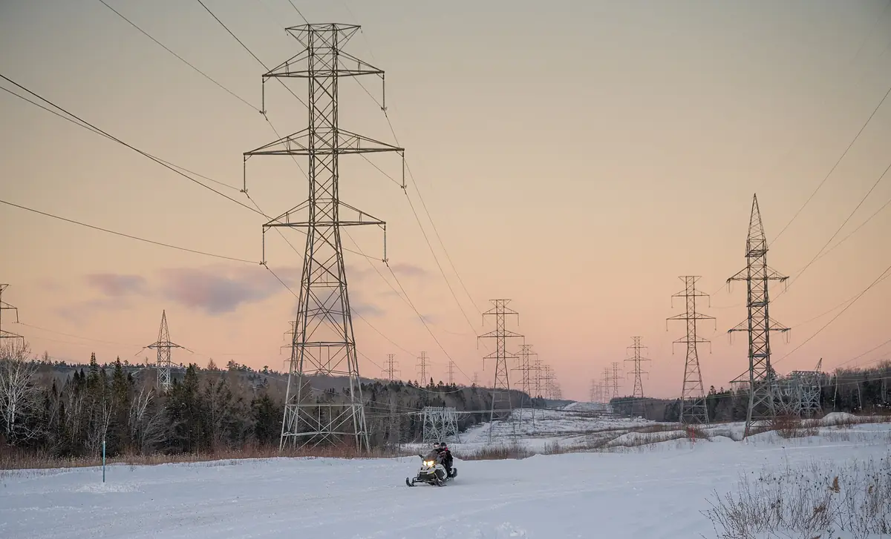

Følg én kilowatttime fra gasfeltet, uranet eller solen og hele vejen ind i et datacenter. Undervejs skifter den hænder mange gange, og ved hvert skridt er der et selskab, der tager sig betalt for noget helt andet end strøm.
Foto: Matthew T Rader, Wikimedia Commons, CC BY-SA 4.0
Strøm skal i det store hele bruges i samme øjeblik, som den bliver produceret. Derfor sørger nogen hele tiden for, at udbud og forbrug i elnettet passer præcist sammen. Ellers går strømmen.1
Det gør energi til en usædvanlig forretning. Den samme kilowatttime kan have været igennem en gasproducent, en rørledning, en turbinefabrik, et elselskab, en entreprenør og et batterisystem, før den når frem. Kun få af dem ejer nogensinde strømmen. De fleste sælger brændsel, udstyr, byggeri eller sikkerhed.
Derfor er det mest nyttige spørgsmål om et energiselskab ikke »er det grønt eller sort?«, men »hvor på rejsen står det, og hvad bliver det betalt for?« Den rejse følger vi her, med selskaberne placeret dér, hvor NewDeal Invests eget datagrundlag placerer dem.
Selskabsbeskrivelserne bag denne side er skrevet med en bestemt disciplin: de siger ikke kun, hvad et selskab gør, men også hvad det ikke er. Det lyder pedantisk. Men det er præcis de fire fejllæsninger, der gør energi svær at forstå. Tallene nedenfor tælles direkte i de 69 beskrivelser, når siden indlæses.
Vælg et stop på rejsen for at se, hvem der hører til dér. Alle selskaber vises ens. Rækkefølgen er alfabetisk og siger intet om størrelse eller betydning. Tryk på et selskab for at læse grundlagets beskrivelse.
Strøm, brændsel, udstyr, byggeri, service eller sikkerhed? Hvert svar har sin egen økonomi, og to selskaber med »energy« i navnet kan sælge helt forskellige ting.
Et kraftværk i drift, en ordre på en turbine og et reaktordesign er tre forskellige stadier. Det er værd at vide, hvilket man ser på.
»Op til 5 GW om året« beskriver, hvad en fabrik kan. Det siger ikke, hvad den faktisk har produceret. Læs datoen og ordet foran tallet.
v4-lab/v5/reused-data.json, afledt af data.json og map-entry.json): selskabernes navne, tickers, land, stop på rejsen og beskrivelser. Selskaber med energi som hovedtema er medtaget (69). Navne er gjort læselige, fx »Am Electric« → »American Electric Power«.Metode: Hvert selskab står på det stop, som datagrundlaget giver det. Grundlaget fortæller ikke, at selskaberne handler med hinanden, og siden påstår det heller ikke: rejsen er en forklaring af energisystemet, ikke et kort over leverancer. Tællingerne i afsnittet om »ikke« er simple tekstsøgninger i beskrivelserne og vises med de præcise søgeord.